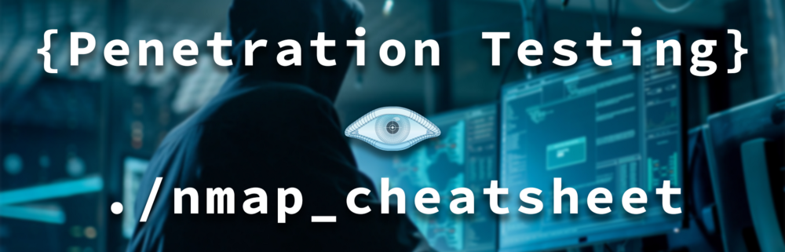

Nmap Cheatsheet

About Nmap
Nmap is used for network discovery and security auditing. In short, nmap displays exposed services on a target machine along with other useful information such as the version and OS detection. It’s also open-source!
TCP Connect
TCP Connect scan completes the 3-way handshake. If a port is open, the operating system completed the TCP three-way handshake and the port scanner immediately closes the connection to avoid DOS. This is “noisy” because the services can log the sender IP address and might trigger Intrusion Detection Systems.
UDP Scan
This scan checks to see if there are any UDP ports listening. Since UDP does not respond with a positive acknowledgment like TCP and only responds to an incoming UDP packet when the port is closed, this type of scan can sometimes show false positives. However, it can also reveal Trojan horses running on high UDP ports and hidden RPC services. It may be quite slow since some machines intentionally slow down responses to this kind of traffic to avoid being overwhelmed. Machines running Windows OS, however, do not implement this slowdown feature, so you should be able to use UDP to scan Windows hosts normally.
SYN Scan
SYN scan is another form of TCP scanning. Rather than using the operating system’s network functions, the port scanner generates raw IP packets itself, and monitors for responses. This scan type is also known as “half-open scanning” because it never actually opens a full TCP connection. The port scanner generates an SYN packet. If the target port is open, it will respond with an SYN-ACK packet. The scanner host responds with an RST packet, closing the connection before the handshake is completed. If the port is closed but unfiltered, the target will instantly respond with an RST packet. There is debate over which scan is less intrusive on the target host. SYN scan has the advantage that the individual services never actually receive a connection.
FIN Scan
This is a stealthy scan, like the SYN scan, but sends a TCP FIN packet instead. Most but not all computers will send an RST packet back if they get this input, so the FIN scan can show false positives and negatives, but it may get under the radar of some IDS programs and other countermeasures.
ACK Scan
Ack scanning determines whether the port is filtered or not. This is especially good when attempting to probe for the existence of a firewall and its rulesets. Simple packet filtering will allow established connections (packets with the ACK bit set), whereas a more sophisticated stateful firewall might not.
NULL Scan
Another very stealthy scan that sets all the TCP header flags to off or null. This is not normally a valid packet and some hosts will not know what to do with this. Windows operating systems are in this group, and scanning them with NULL scans will produce unreliable results. However, for non-Windows servers protected by a firewall, this can be a way to get through.
XMAS Scan
Similar to the NULL scan except for all the flags in the TCP header is set to on. Windows machines won’t respond to this due to the way their TCP stack is implemented. Xmas scans derive their name from the set of flags that are turned on within a packet. These scans are designed to manipulate the PSH, URG and FIN flags of the TCP header.
RPC Scan
This special type of scan looks for machines answering to RPC (Remote Procedure Call) services. RPC, which allows remote commands to be run on the machine under certain conditions, can be a dangerous service. Since RPC services can run on many different ports, it is hard to tell from a normal scan which ones might be running RPC. This scan will probe the ports found open on a machine with commands to show the program name and version if RPC is running. It’s not a bad idea to run one of these scans every so often just to find out if and where you have these services running.
IDLE Scan
It is a super stealthy method whereby the scan packets are bounced off an external host. You don’t need to have control over the other host but it does have to set up and meet certain requirements. You must input the IP address of our “zombie” host and what port number to use. It is one of the more controversial options in Nmap since it really only has a use for malicious attacks.
Scan Techniques
| Switch | Description | Example |
|---|---|---|
| -sS | TCP SYN port scan. | nmap -sS 192.168.1.1 |
| -sT | TCP Connect port scan. | nmap -sT 192.168.1.1 |
| -sU | UDP port scan. | nmap -sU 192.168.1.1 |
| -sA | TCP ACK port scan. | nmap -sA 192.168.1.1 |
Host Discovery
| Switch | Description | Example |
|---|---|---|
| -Pn | Only port scan. | nmap -Pn 192.168.1.1 |
| -sn | Only host discovery. | nmap -sn 192.168.1.1 |
| -PR | ARP discovery on local network. | nmap -PR 192.168.1.1 |
| -n | Disable DNS resolution. | nmap -n 192.168.1.1 |
Port Specification
| Switch | Description | Example |
|---|---|---|
| -p | Port or port range. | nmap -p 22-80 192.168.1.1 |
| -p- | Scan all ports. | nmap -p- 192.168.1.1 |
| -F | Fast port scan. (top 100) | nmap -F 192.168.1.1 |
Service and Version Detection
| Switch | Description | Example |
|---|---|---|
| -sV | Detect the version of services. | nmap -sV 192.168.1.1 |
| -A | Enable OS detection, version detection, script scanning and trace route. | nmap -A 192.168.1.1 |
OS Detection
| Switch | Description | Example |
|---|---|---|
| -O | Identify OS using TCP/IP strack fingerprinting. | nmap -O 192.168.1.1 |
Timing and Performance
| Switch | Description | Example |
|---|---|---|
| -T0 | Paranoid IDS evasion. | nmap -T0 192.168.1.1 |
| -T1 | Sneaky IDS evasion. | nmap -T1 192.168.1.1 |
| -T2 | Polite IDS evasion. (requires less bandwidth) | nmap -T2 192.168.1.1 |
| -T3 | Normal IDS evasion. (default) | nmap -T3 192.168.1.1 |
| -T4 | Aggressive speed scan. (requires fast network) | nmap -T4 192.168.1.1 |
| -T5 | Insane speed scan. (requires massive network speed) | nmap -T5 192.168.1.1 |
NSE Scripts
| Switch | Description | Example |
|---|---|---|
| -sC | Default script scan. | nmap -sC 192.168.1.1 |
| –script banner | Specify single script. (banner grabbing) | nmap –script banner 192.168.1.1 |
Before you go
If you found this article helpful, please share to help others with similar interest find it! + Feedbacks and donations always welcome!